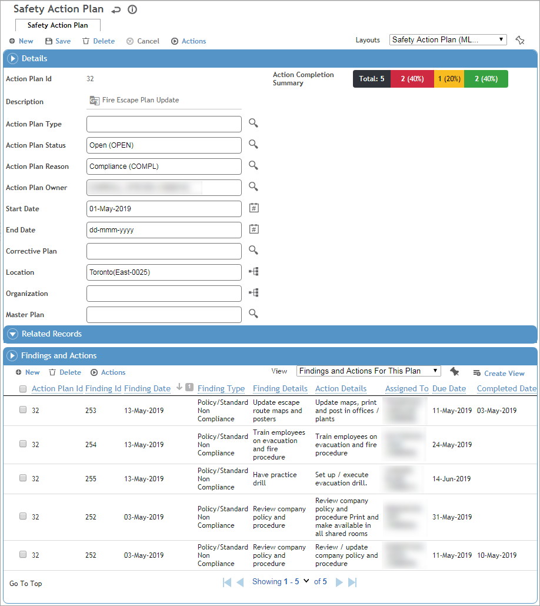

Group similar findings and actions together in an action plan, and track the overall completion progress of the plan. An action plan can include existing findings, or new findings and actions can be created from within the plan.

To create an action plan:
In the appropriate Cloud’s menu, choose Action Plan.
Record information about the action plan, such as the Type, Status, Reason, Owner, and Start/End Date.
If you have multiple action plans and want to link them, select the common Master Plan. Navigation arrows will display to the right of the Actions menu to allow you to quickly navigate to the record’s linked action plan(s). A linked action plan cannot be selected as the Master Plan on another record.
In the Related Records section, link other types of records to the action plan, such as as a related audit.
In the Findings and Actions section, create new findings, or open an existing finding choose Actions»Add to Action Plan. See Recording a New Finding.
As findings are added to the plan, the Action Completion Summary bar chart is updated to reflect the total number of actions in the plan and the breakdown of Overdue (red), Due (orange), and Completed (green), based on the action status. This progress indicator only includes actions that have a due date defined.
The actions in an action plan can be viewed and updated separately (e.g. via the Findings and Actions option in a Cloud’s menu) or from within the action plan. The action plan’s Completion Summary will always reflect the action’s status.